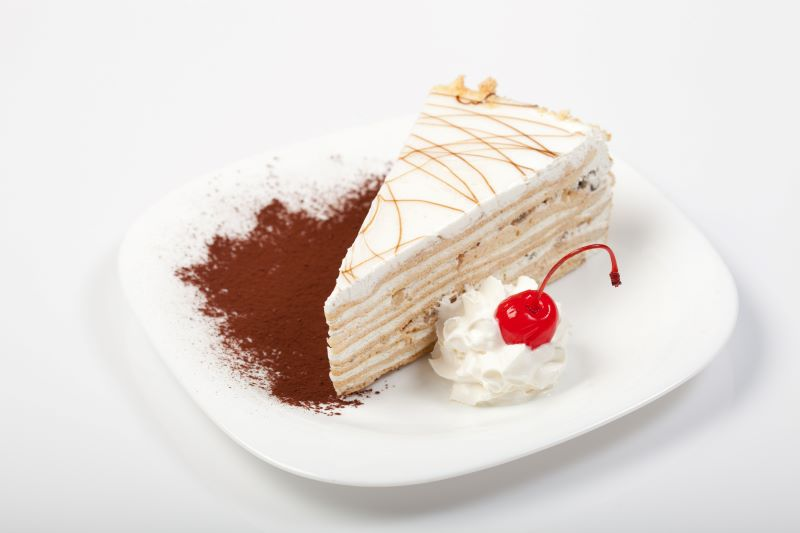
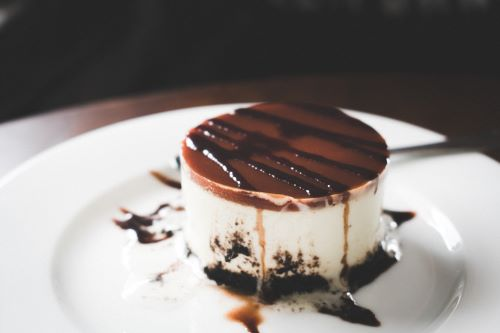

Deserturi

Prăjitură cu cremă de nuci
Felie de prăjitură cu cremă albă și decor de caramel – 12 lei

Prăjitură cu cremă de vanilie
Un desert clasic, cu cremă de vanilie și blat de biscuiti – 10 lei
Gogoșicu glazură
Servite alături de o linfură de inghețată la alegere, în funcție de disponibilitate – 20 lei

Clătite cu nucă și miere
Umplute cu o combinație de nucă măcinată și miere, cu un strop de frișcă sau înghețată de vanilie - 25 lei